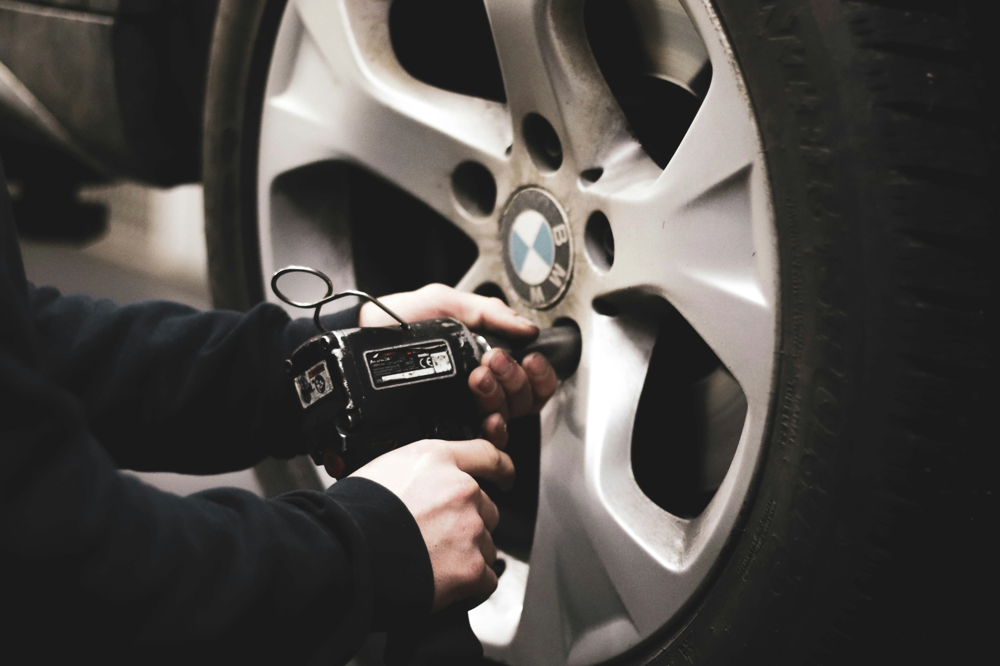
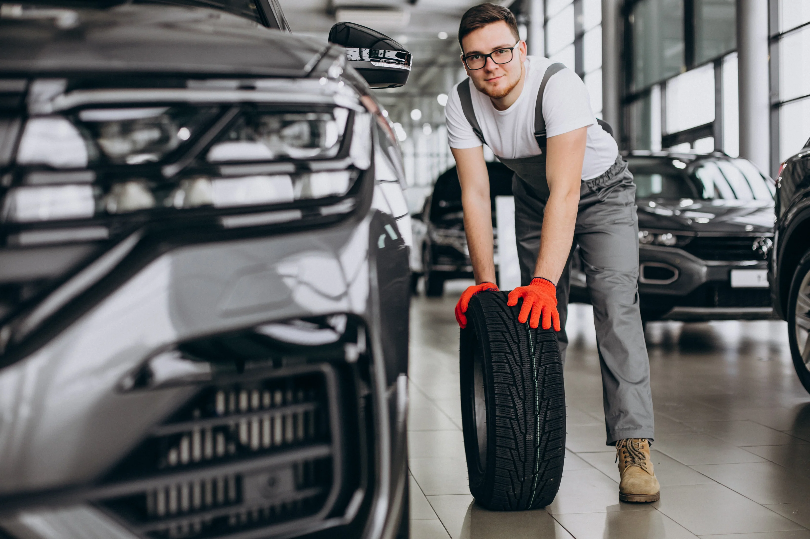
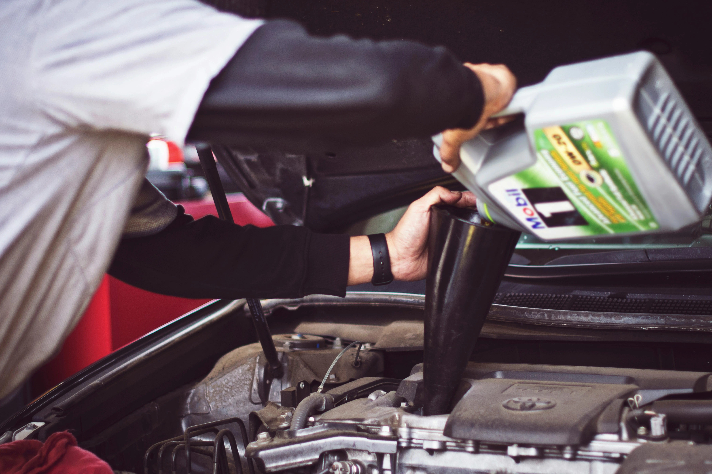

Авто | Сервис
Автосервис для вас и вашего авто
т|о
Технический осмотр — это проверка технического состояния транспортных средств на соответствие обязательным требованиям безопасности. Он нужен только в случаях, оговоренных в законе. Но владелец машины может пройти техосмотр добровольно.
Техосмотр нужен для того, чтобы понять, насколько безопасна машина. На осмотре специалисты выявляют неисправности автомобиля, которые водитель сможет вовремя устранить. Это, в свою очередь, поможет избежать более серьезных поломок и дорогостоящего ремонта.
A technical inspection is a check of the technical condition of vehicles for compliance with mandatory safety requirements. It is needed only in cases stipulated in the law. But the owner of the car can pass the inspection voluntarily.
A technical inspection is necessary in order to understand how safe the car is. During the inspection, specialists identify vehicle malfunctions that the driver will be able to eliminate in time. This, in turn, will help to avoid more serious breakdowns and expensive repairs.
Механики
Лучшие мастера-механики для вашего авто. Автомобиль в надежных руках.
Наш сервис
Замена масел

Автопарк для подмены авто